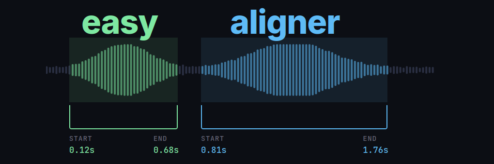
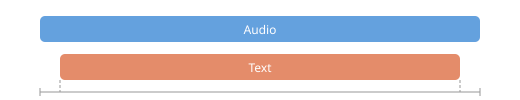
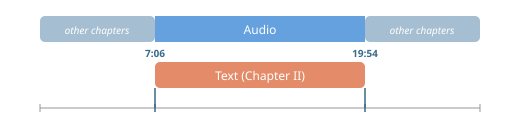

easyaligner is a forced alignment library for aligning text transcripts with audio. It is designed with a focus on ease of use, flexibility, and performance. The library can be used for a variety of applications, including
- Aligning e-texts with audiobook recordings to create interactive reading experiences (see the interactive demo below).
- Aligning podcast transcripts to enable features like chapter navigation and keyword search.
- Aligning protocols and recordings of parliamentary debates for research and accessibility purposes.
- Fixing misaligned subtitles in videos, or creating new subtitles from transcripts.
- Creating large-scale speech recognition and speech synthesis datasets for AI model training.
The aligned outputs from easyaligner can be segmented at any level of granularity (sentence, paragraph, etc.), while preserving the original text’s formatting.
See easyaligner’s documentation on text processing for more details on how to customize tokenization and text normalization to suit your specific use case and language.
Tutorials
The easyaligner documentation provides tutorials for three common forced alignment scenarios. The guides cover scenarios where the ground-truth text spans either all or only part of the spoken content in the audio, and where the relevant audio region is either known in advance or needs to be discovered.
Align text and audio: the text transcript covers all the spoken content in the audio.

Known audio region: the text covers only part of the spoken content in the audio. But we know the relevant audio region in advance (e.g. from metadata or a table of contents).

Locate relevant audio region: the text covers only part of the spoken content in the audio, and we don’t know the relevant audio region in advance. Uses fuzzy text matching against an ASR transcription to discover the region.

Pipeline
easyaligner runs three pipeline stages in sequence: voice activity detection (VAD), emission extraction, and forced alignment. These can, most conveniently, be run as a single pipeline() call. Each stage can however also be run independently.
For VAD, easyaligner supports both pyannote and silero models. Note that pyannote is a gated model. You need to accept the terms and conditions and authenticate with a Hugging Face access token to be able to run the model. silero can be used without authentication.
VAD outputs are currently not used for alignment purposes, but rather for ASR transcription purposes in the companion library easytranscriber.
easyaligner scales well for longer audio recordings. It can be used to align hours of audio in a single pass—without the need to segment the audio into smaller chunks. This allows the forced alignment to operate globally over the full sequence, rather than segment by segment (Pratap et al. 2024).
The GPU-accelerated forced alignment in easyaligner uses Pytorch’s forced alignment API.
Installation
pip install easyaligner --extra-index-url https://download.pytorch.org/whl/cu128When installing with uv, PyTorch’s CUDA/CPU version is selected automatically:
uv pip install easyalignerUsage
The following example downloads and aligns a 57-second snippet from a LibriVox audiobook recording of A Tale of Two Cities, corresponding to the first paragraph of Chapter I. The text to be aligned is supplied directly as a string:
from pathlib import Path
from transformers import (
AutoModelForCTC,
Wav2Vec2Processor,
)
from huggingface_hub import snapshot_download
from easyaligner.text import load_tokenizer
from easyaligner.data.datamodel import SpeechSegment
from easyaligner.pipelines import pipeline
from easyaligner.text import text_normalizer
from easyaligner.vad.pyannote import load_vad_model
file_pattern = "tale-of-two-cities_align-en/taleoftwocities_01_dickens_64kb_align.mp3"
# Download mp3 from HF dataset repo
snapshot_download(
"Lauler/easytranscriber_tutorials",
repo_type="dataset",
local_dir="data/tutorials",
allow_patterns=file_pattern,
)
text = """
It was the best of times, it was the worst of times, it was the age of
wisdom, it was the age of foolishness, it was the epoch of belief, it
was the epoch of incredulity, it was the season of Light, it was the
season of Darkness, it was the spring of hope, it was the winter of
despair, we had everything before us, we had nothing before us, we were
all going direct to Heaven, we were all going direct the other way--in
short, the period was so far like the present period, that some of its
noisiest authorities insisted on its being received, for good or for
evil, in the superlative degree of comparison only.
"""
text = text.strip()
# The alignments will be organized according to how the text is tokenized
tokenizer = load_tokenizer(language="english") # sentence tokenizer
span_list = list(tokenizer.span_tokenize(text)) # start, end character indices
speeches = [[SpeechSegment(speech_id=0, text=text, text_spans=span_list, start=None, end=None)]]
# Load models and run pipeline
model_vad = load_vad_model()
model = (
AutoModelForCTC.from_pretrained("facebook/wav2vec2-base-960h").to("cuda").half()
)
processor = Wav2Vec2Processor.from_pretrained("facebook/wav2vec2-base-960h")
# File(s) to align
filepath = Path("data/tutorials") / filepath_pattern
audio_dir = filepath.parent
audio_files = [filepath.name]
pipeline(
vad_model=model_vad,
emissions_model=model,
processor=processor,
audio_paths=audio_files,
audio_dir=audio_dir,
speeches=speeches,
alignment_strategy="speech",
text_normalizer_fn=text_normalizer,
tokenizer=tokenizer,
start_wildcard=True,
end_wildcard=True,
blank_id=processor.tokenizer.pad_token_id,
word_boundary="|",
)easyaligner allows organizing the output at any level of granularity (sentence, paragraph, or custom). In this example, we use nltk’s PunktTokenizer for sentence-level segmentation. See the text processing documentation for custom tokenizers.
To use silero instead of pyannote for VAD, simply replace the import: from easyaligner.vad.silero import load_vad_model. The rest of the code stays the same.
A list of suitable emission models for different languages can be found in the WhisperX library.
If your audio and transcript are multilingual, you can try using the Massively Multilingual Speech model from Meta: mms-1b-all.
Output
easyaligner outputs a JSON file for each pipeline stage. The final aligned output in output/alignments contains word-level timestamps:
output
├── vad ← SpeechSegments with AudioChunks (VAD boundaries)
├── emissions ← + emission file paths (.npy)
└── alignments ← + AlignmentSegments with word timestampsEach alignment segment includes segment-level and word-level start/end timestamps with confidence scores:
{
"start": 4.972,
"end": 56.992,
"text": "It was the best of times, it was the worst of times, ...",
"score": 0.975,
"words": [
{"text": "It ", "start": 4.972, "end": 5.052, "score": 0.631},
{"text": "was ", "start": 6.673, "end": 6.773, "score": 1.000},
{"text": "the ", "start": 6.853, "end": 6.953, "score": 0.920},
{"text": "best ", "start": 7.273, "end": 7.594, "score": 1.000},
{"text": "of ", "start": 7.734, "end": 7.774, "score": 1.000},
{"text": "times, ", "start": 7.894, "end": 8.574, "score": 0.969}
]
}Interactive demo
Word-level timestamps allow for building interactive applications where text is highlighted in sync with the audio. In the demo below, we use the alignment output from the first paragraph of A Tale of Two Cities.
Pressing play will highlight each word as it is spoken. You can also click any word to jump to that point in the audio. Dragging the progress bar will also cause the relevant spoken word at that timestamp to be highlighted.
You can find the recording of the audiobook at LibriVox.
Search interface: easysearch
Want to create similar interactive search interfaces for browsing and querying your alignment outputs?
easysearch is a lightweight search interface for browsing and querying alignment outputs, built into the companion library easytranscriber. It indexes the alignment JSON files into a SQLite database with full-text search and serves a web UI with synchronized audio playback and transcript highlighting.
pip install easytranscriber[search]
easysearch --alignments-dir output/alignments --audio-dir data/audioThis indexes all alignment JSON files and starts a web server at http://127.0.0.1:8642. On subsequent launches, only new or modified files are re-indexed.
The search uses SQLite FTS5 and supports queries like "exact phrase", prefix*, word1 OR word2, word1 NOT word2, and NEAR(word1 word2, 3). Clicking a search result navigates to the document at the matching timestamp and begins playback with synchronized highlighting.
Documentation and source code
Visit easyaligner’s documentation website for detailed guides, API references and more:
- Documentation: kb-labb.github.io/easyaligner
- GitHub: github.com/kb-labb/easyaligner
- PyPI: pypi.org/project/easyaligner
easyaligner can be used standalone for forced alignment of ground-truth transcripts with audio. For automatic speech recognition with alignment, see the companion library easytranscriber, which uses easyaligner as its alignment backend.
Acknowledgements
The forced alignment in easyaligner is based on Pytorch’s forced alignment API, which implements a GPU-accelerated version of the Viterbi algorithm (Pratap et al. 2024).
Public domain LibriVox recordings are used as tutorial examples.
References
Citation
@online{rekathati2026,
author = {Rekathati, Faton},
title = {Easyaligner: {Forced} Alignment of Text and Audio, Made Easy},
date = {2026-04-08},
url = {https://kb-labb.github.io/posts/2026-04-08-easyaligner/},
langid = {en}
}